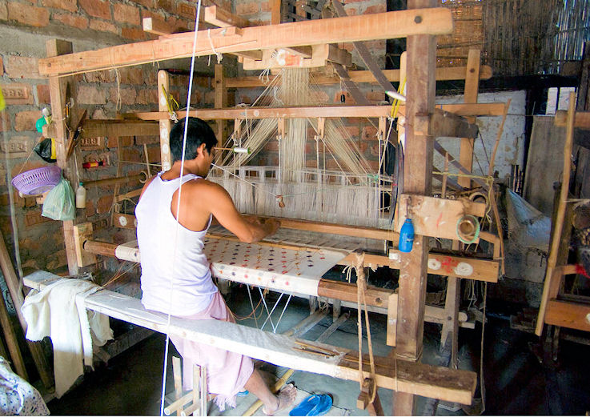
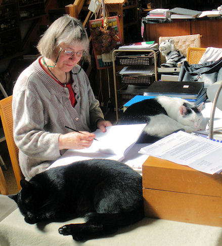

mailto:payer@payer.de
Zitierweise | cite as:
Payer, Alois <1944 - >: Sanskritkurs. -- 48. Lektion 48. -- Fassung vom 2009-01-23. -- URL: http://www.payer.de/sanskritkurs/lektion48.htm
Erstmals hier publiziert: 2009-01-11
Überarbeitungen: 2009-01-23 [Verbesserungen]
Anlass: Lehrveranstaltungen 1980 - 1984
©opyright: Dieser Text steht der Allgemeinheit zur Verfügung. Eine Verwertung in Publikationen, die über übliche Zitate hinausgeht, bedarf der ausdrücklichen Genehmigung des Verfassers
Dieser Text ist Teil der Abteilung Sanskrit सत्य् von Tüpfli's Global Village Library
Falls Sie die diakritischen Zeichen nicht dargestellt bekommen, installieren Sie eine Schrift mit Diakritika wie z.B. Tahoma.
Die Devanāgarī-Zeichen sind in Unicode kodiert. Sie benötigen also eine Unicode-Devanāgarī-Schrift.
सत्यम् वद ॥१॥
धर्मं चर ॥२॥
मातृदेवो भव ॥३॥
गौरवं प्राप्यते दानात् ॥४॥
श्वः कार्यमद्य कुर्वीत ॥५॥
विद्याविहीनः पशुः ॥६॥
लाघवं वैयाकरणस्य भूषणम् ॥७॥
| परस्मैपदम् | आत्मनेपदम् | |||
|---|---|---|---|---|
| एकवचनम् | बहुवचनम् | एकवचनम् | बहुवचनम् | |
| 1. Person तृतीयः |
-āni | -ai | -āma | -āmahai |
| 2. Person मध्यमः |
-dhi -hi -ø -āna -tāt1 |
-sva | -ta | -dhvam |
| 3. Person प्रथमः |
-tu -tāt1 |
-tām | -antu
3.Kl.: -atu |
-atām (aus: -*ntām) |
Anm.: 1 Die Endungen der 2. und 3.sg.P können durch -tāt ersetzt werden, wenn ein Segenswunsch ausgedrückt werden soll. -tāt tritt (auch in der 3.sg.P) an den schwachen Stamm.
| Zur Form der Endung der 2.sg.Imperativ.P: | |
| -ø | Wurzeln der 5. und 8. Klasse, bei denen dem auslautenden -u nur ein Konsonant vorausgeht. |
| Wurzeln der 9. Klasse, die auf Konsonant enden, substituieren für -nī+Endung -āna | |
| -hi | alle übrigen Präsensstämme, die auf Vokal
oder Halbvokal enden Ausnahme: जुहुधि zu हु 3 |
| -dhi | Alle übrigen Fälle |
Starker Stamm:
Schwacher Stamm: alle übrigen Formen |
द्विष् 2U
परस्मैपदम् आत्मनेपदम् एकवचनम् बहुवचनम् एकवचनम् बहुवचनम् 1. Person
तृतीयःद्वेषानि द्वेषाम द्वेषै द्वेषामहै 2. Person
मध्यमःद्विड्ढि
dviṣ + dhiद्विष्टात्
द्विष्ट द्विक्ष्व
dviṣ + svaद्विड्ढ्वम्
dviṣ + dhvam3. Person
प्रथमःद्वेष्टु द्विष्टात्
द्विषन्तु द्विष्टाम् द्विषताम्
dviṣ-atām
आस् 2Ā
आत्मनेपदम् एकवचनम् बहुवचनम् 1. Person
तृतीयःआसै आसामहै 2. Person
मध्यमःआस्स्व आध्वम्
ās + dhvam3. Person
प्रथमःआस्ताम् आसताम्
दुह् 2U
परस्मैपदम् आत्मनेपदम् एकवचनम् बहुवचनम् एकवचनम् बहुवचनम् 1. Person
तृतीयःदोहानि दोहाम दोहै दोहामहै 2. Person
मध्यमःदुग्धि
duh + dhiदुग्ध
duh + taधुक्ष्व
duh + svaधुग्ध्वम् 3. Person
प्रथमःदोग्धु
doh + tuदुहन्तु दुग्धाम् दुहताम्
इ 2P
परस्मैपदम् एकवचनम् बहुवचनम् 1. Person
तृतीयःअयानि
e + āniअयाम 2. Person
मध्यमःइहि इत 3. Person
प्रथमःएतु यन्तु
y-antu
शी 2Ā (immer hochstufig!)
आत्मनेपदम् एकवचनम् बहुवचनम् 1. Person
तृतीयःशयै
śe + aiशयामहै 2. Person
मध्यमःशेष्व शेध्वम् 3. Person
प्रथमःशेताम् शेरताम्
हन् 2P
परस्मैपदम् एकवचनम् बहुवचनम् 1. Person
तृतीयःहनानि हनाम 2. Person
मध्यमःजहि 1 हत
aus: *hn-ta3. Person
प्रथमःहन्तु घ्नन्तु 1 Erklärung von जहि siehe Thumb-Hauschild I,2 S. 253
स्तु 2U
परस्मैपदम् आत्मनेपदम् एकवचनम् बहुवचनम् एकवचनम् बहुवचनम् 1. Person
तृतीयःस्तवानि
sto + āniस्तवाम स्तवै स्तवामहै 2. Person
मध्यमःस्तुहि
स्तुवीहिस्तुत
स्तुवीतस्तुष्व
स्तुवीष्वस्तुध्वम्
स्तुवीध्वम्3. Person
प्रथमःस्तौतु
स्तवीतुस्तुवन्तु स्तुताम्
स्तुवीताम्स्तुवताम्
अस् 2P
परस्मैपदम् एकवचनम् बहुवचनम् 1. Person
तृतीयःअसानि असाम 2. Person
मध्यमःएधि
aus: *s-dhiस्त 3. Person
प्रथमःअस्तु सन्तु
शास् 2P
परस्मैपदम् एकवचनम् बहुवचनम् 1. Person
तृतीयःशासानि शासाम 2. Person
मध्यमःशाधि
aus: śās + dhi
unregelm. hochstufigशिष्ट 3. Person
प्रथमःशास्तु शासतु
unregelm. hochstufig
|
Die 3.pl.P endet auf -atu ! |
हु 3P
परस्मैपदम् आत्मनेपदम् एकवचनम् बहुवचनम् एकवचनम् बहुवचनम् 1. Person
तृतीयःजुहवानि
ju-ho + āniजुहवाम <जुहवै> <जुहवामहै> 2. Person
मध्यमःजुहुधि
unregelmäßig1जुहुत <जुहुष्व> <जुहुध्वम्> 3. Person
प्रथमःजुहोतु जुह्वतु
ju-hu + atu<जुहुताम्> <जुह्वताम्>
1 Dissimilation, sodass nicht zwei Silben mit ह् aufeinanderfolgen.
धा 3U
परस्मैपदम् आत्मनेपदम् एकवचनम् बहुवचनम् एकवचनम् बहुवचनम् 1. Person
तृतीयःदधानि
da-dhā + āniदधाम दधै
da-dhā + aiदधामहै 2. Person
मध्यमःधेहि 1 धत्त
da-dh + taधत्स्व धद्ध्वम् 3. Person
प्रथमःदधातु दधतु
da-dh-atuधत्ताम् दधताम् 1 धेहि aus *dhazdhi: Wegfall des indogermanischen Zischlauts z unter Ersatzdehnung ; s. Thumb-Hauschild I,1 S. 302
हा 3P
परस्मैपदम् एकवचनम् बहुवचनम् 1. Person
तृतीयःजहानि जहाम 2. Person
मध्यमःजहाहि
unregelm. stark. St.
जहीहि
जहिहिजहीत
जहित3. Person
प्रथमःजहातु जहतु
ja-h-atu
| Mit dem Suffix -a und (seltener) -ya kann
aus einem Nomen ein anderes Nomen abgeleitet werde. Dabei erhält die
erste Silbe des ursprünglichen Nomens Dehnstufe (वृद्धि). Endet der
ursprüngliche Wortstamm bereits auf -a so ist die वृद्धि das einzige
Zeichen der Ableitung, da sich am Stammauslaut nichts ändert. Die abgeleitenden Wörter haben die Bedeutung: "irgendeine Beziehung zu dem durch das Grundwort Bezeichnete habend" z.B.
Die so gebildeten Wörter sind Adjektive, können aber substantiviert werden, z.B. als Patronymica (Namensbildung nach dem Vater: "Sohn des N.N:") oder Abstrakta (meist Neutra). |
Beispiele:
Grundwort Ableitung शुचि 3 "leuchtend, rein" शौच n. "Reinheit" पुत्र m. "Sohn" पौत्र m. "vom Sohn stammend = Sohnessohn, Enkel" गोतम m. "Besitzer sehr vieler Rinder" Eigenname गौतम m. "Sohn des Gotama" ब्रह्मन् n. "formulierte Wahrheit, Veda, Absolutes" ब्राह्मण m. "Wahrheitsformulierer, Brahmane" शूर 3 "heldenhaft" शौर्य n. "Heldenhaftigkeit, Tapferkeit" राजन् m. "König" राज्य n. "Königsherrschaft" देव m. "Himmlischer, Gott" दैव्य 3 "himmlisch" ग्राम m. "Dorf" ग्राम्य 3 "dörfisch"
| Behandlung des Stammauslautes vor dem Suffix -a: | |
|
Stämme auf: |
|
| -ṛ | -a tritt in der Regel an den Auslaut -r:
|
| -a | Ersatz des -a des Grundwortes durch das
neue Suffix -a. Beispiele siehe oben. |
| -i | Wegfall des -i
|
| -u | meistens: -av-a
|
| andere Deklinationsstämme: s. Wackernagel, Altind. Grammatik II,2 § 38 | |
|
Vor dem Suffix -ya wird der Stammauslaut ähnlich wie vor dem Suffix -a behandelt.
|
Mittels dieser Suffixe können auch von
Komposita Ableitungen gebildet werden.
Bei Komposita, in denen infolge des Sandhi im Vorderglied auslautendes -i oder -u durch -y bzw. -v ersetzt werden und so dem ersten Vokal des Grundwortes vorausgehen (z.B. Komposita mit ni-, vi-, su-), wird die वृद्धि so gebildet, als ob -iy bzw. -uv datsehen würde.
|
Abb.: वैयाघ्रं विजृम्भणम् (Gähnen)
[Bildquelle: Gunnlaugur Þ. Briem. --
http://www.flickr.com/photos/gthb/247964428/. -- Zugriff am 2009-01-10. --
Creative
Commons Lizenz (Namensnennung, keine kommerzielle Nutzung, share alike)]
श्वस् : morgen
अद्य : heute
लघु 3: leicht (nicht schwer, nicht schwierig), schnell, kurz (im Ausdruck)
व्याकरण n.: Grammatik (zu व्याकृ)
तन्त्र n.: Saite ; Webstuhl, Webkette, Gewebe ; Grundlage, Norm, Regel ; Lehre, Lehrwerk ; Tantra ; Zauberformel ; Mittel, Trick, Arzneimittel ; Regierung, Autorität

Abb.: तन्त्रम्
Sualkuchi = সুৱালকুচি, Assam = অসম
[Bildquelle: Ken McChesney. --
http://www.flickr.com/photos/kenmak/2083565996/. -- Zugriff am 2009-01-10.
--
Creative
Commons Lizenz (Namensnennung, keine kommerzielle Nutzung, share alike)]
Abb.: तन्त्री
Sitarspieler = सितारवादकः
[Bildquelle: Wikipedia. Public domain]
स्त्री f.: Frau, Gattin ; Femininum
Deklination:
एकवचनम बहुवचनम् प्रथमा स्त्री स्त्रियस् द्वितीया स्त्रियम्
स्त्रीयम्स्त्रियस्
स्त्रीस्तृतीया स्त्रिया स्त्रीभिस् चतुर्थी स्त्रियै स्त्रीभ्यस् पञ्चमी स्त्रियास् स्त्रीभ्यस् षष्ठी स्त्रियास् स्त्रीणाम् सप्तमी स्त्रियाम् स्त्रीषु आमन्त्रितम् स्त्रि स्त्रियस्
Abb.: स्वतन्त्राः स्त्रियः
Self-help group
(SHG), Tamil Nadu = தமிழ்நாடு
[Bildquelle: mckaysavage. --
http://www.flickr.com/photos/mckaysavage/2229752965/. -- Zugriff am
2009-01-10. --
Creative Commons Lizenz (Namensnennung, keine kommerzielle Nutzung)]
दिवानिशम् Adverb: bei Tag und Nacht
सज्ज् 1P सज्जति : hängen, anhaften
कुमार m.: Kind, Jüngling, Prinz; Beiname des कार्तिकेय / Murugan = முருகன் = മുരുകന് / Subrahmanya = ಸುಬ್ರಹ್ಮಣ್ಯ
Abb.: कुमारः / Murugan =
முருகன்
Thaipusam-Fest =
தைப்பூசம், Batu
Caves, Malaysia
[Bildquelle: tajai. --
http://www.flickr.com/photos/cayce/108707865/. -- Zugriff am 2009-01-10. --
Creative Commons
Lizenz (Namensnennung)]
कुमारी f.: Mädchen, Tochter
Abb.: कुमारी
नेपाल
[Bildquelle: changhg. --
http://www.flickr.com/photos/changhg/100412648/. -- Zugriff am 2009-01-10.
-- Creative
Commons Lizenz (Namensnennung, keine kommerzielle Nutzung, keine
Bearbeitung)]
कौमर n.: Kindheit
यौवन n.: Jugend
स्थविर 3: alt, betagt
Abb.: स्थविराः
जोधपुर
[Bildquelle: zz77. --
http://www.flickr.com/photos/zz77/2256414024/. -- Zugriff am 2009-01-10. --
Creative
Commons Lizenz (Namensnennung, keine kommerzielle Nutzung, keine
Bearbeitung)]
स्थाविर n.: (hohes) Alter
वाच्य 3: auch: tadelnswert
सूक्ष्म 3: fein, winzig, subtil
Abb.: सूक्ष्मम्
Karanji Lake = ಕಾರಂಜಿ ಕೆರೆ
[Bildquelle: Nagesh Kamath. --
http://www.flickr.com/photos/nagesh_kamath/2791791571/. -- Zugriff am
2009-01-10. --
Creative Commons Lizenz (Namensnennung, share alike)]
प्रसङ्ग m.: Anhaftung, Neigung ; Gelegenheit
विशेष m.: Unterschied, Besonderheit
प्रसूति f.: Geburt, Nachkommenschaft
चरित्र n.: Brauch, Sitte, Gewohnheitsrecht ; Wandel
जाया f.: Ehefrau

Abb.: मम जाया
(Bild: Payer)
A) Übersetzen Sie die सुभाषितानि zu Beginn der Lektion.
B) Übersetzen Sie ins Sanskrit (verwenden Sie dabei den Imperativ und möglichst Wurzeln der 2. und 3. Präsensklasse):
1. Nachdem du einen Sohn bekommen hast, verlasse die Familie!
2. Nachkommen des Puru, fürchtet euch vor denen, die Böses getan haben!
3. Die Mädchen sollen den Bettlern Speise geben.
4. Wir wollen sprechen.
5. Mit den Worten "Komm Mönch!" nahm Buddha den Mann in den Mönchsorden auf (उपसम्पद् Kausativ).
6. Seid wahre Nachfahren Manus!
7. Ich will शिव und die anderen Götter preisen.
8. Erzähle!
9. Miss die Höllen aus!
10. Sie (pl.) sollen auf diesen Liegen liegen.
11. Die tigergleichen Männer sollen die töten, die Indra feind sind.
12. Konzentriere dich!
13. Sitzt hier!
14. Wir wollen diese Früchte essen.
15. Der Diener soll die Kuh melken.
16. König, hüte den Dharma und die Leute.
17. Lehre die Schüler den Veda!
18. Er soll neue Kleider anziehen.
19. Sie (pl.) sollen in meinem Haus sitzen.
20. Ehemänner sollen ihre Gattinnen erhalten (i. S. v. Unterhalt).
मनुस्मृति ९ (स्त्रीधर्मः):
अस्वतन्त्राः स्त्रियः कार्याः पुरुषैः स्वैर्दिवानिशम् ।
विषयेषु च सज्जन्त्यः संस्थाप्या आत्मनो वशे ॥२॥
पिता र्क्षति कौमरे भर्ता रक्षति यौवने ।
रक्षन्ति स्थाविरे पुत्रा न स्त्री स्वातन्त्र्यमर्हति ॥३॥
काले ऽदाता पिता वाच्यो वाच्यश्चानुपनयन्पतिः ।
मृते भर्तरि पुत्रस्तु वाच्यो मातुररक्षिता ॥४॥
सूक्ष्मेभ्यो ऽपि प्रसङ्गेभ्यः स्त्रियो रक्ष्या विशेषतः ।
द्वयोर्हि कुलयोः शोकमावहेयुररक्षिताः ॥५॥
इमं हि सर्ववर्णानां पश्यन्तो धर्ममुत्तमम् ।
यतन्ते रक्षितुं भार्यां भर्तारो दुर्बला अपि ॥६॥
स्वां प्रसूतिं चरित्रं च कुलमात्मानमेव च ।
स्वं च धर्मं प्रयत्नेन जायां रक्षन्हि रक्षति ॥७॥
पतिर्भार्यां संप्रविश्य गर्भो भूत्वेह जायते ।
जायायास्तद्धि जायात्वं यद् अस्यां जायते पुनः ॥८॥Erklärung:
द्वयोर्हि कुलयोः : Gen. (षष्ठी) Dual zu द्वे कुले "zwei Familien"
Zu Lektion 49